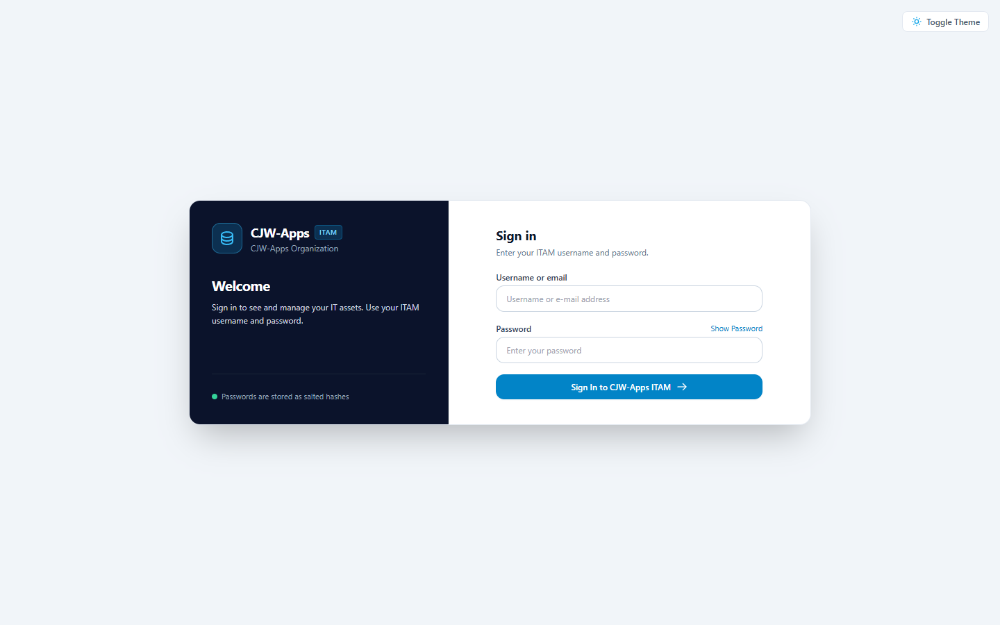
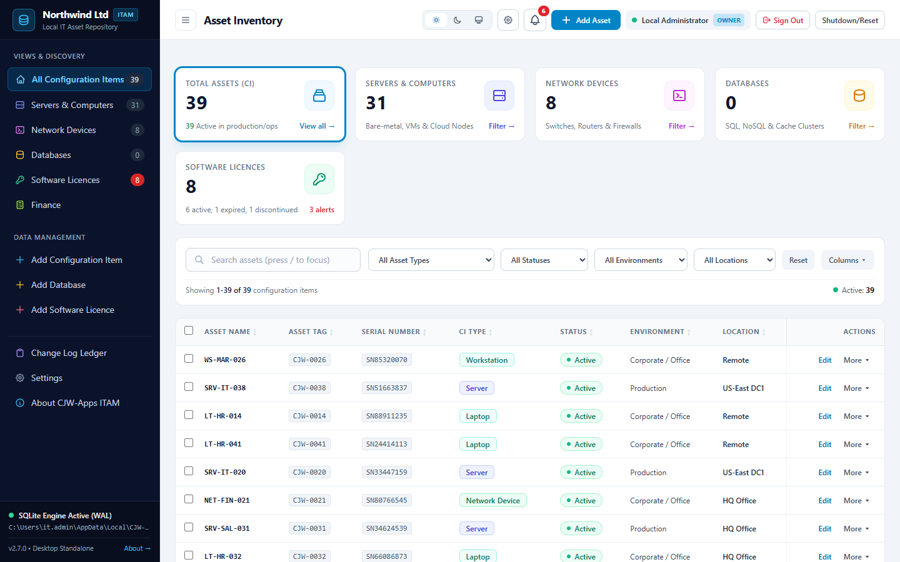
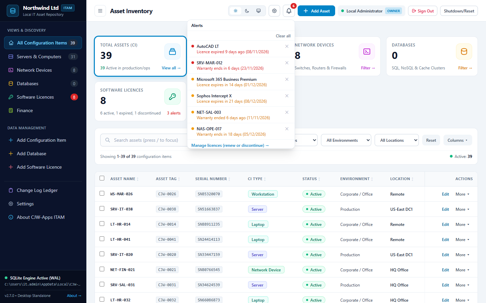
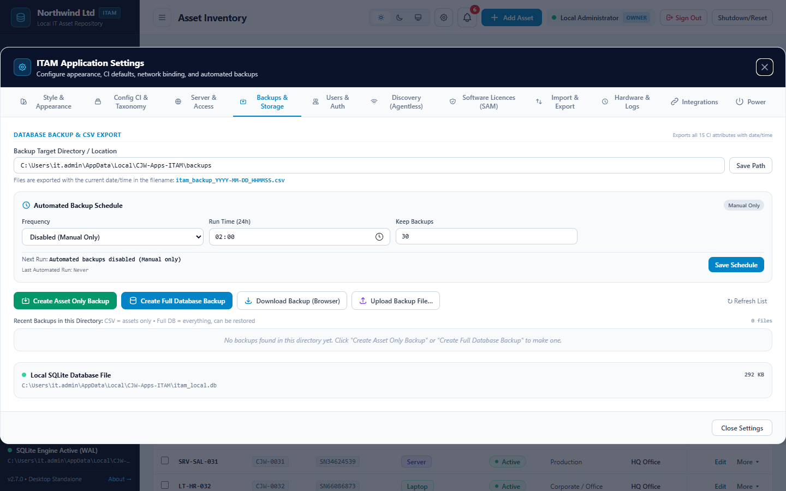
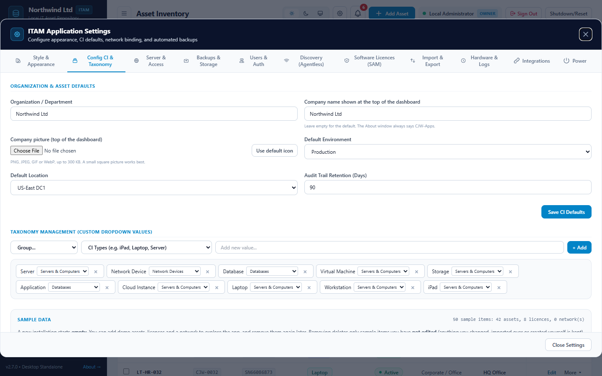
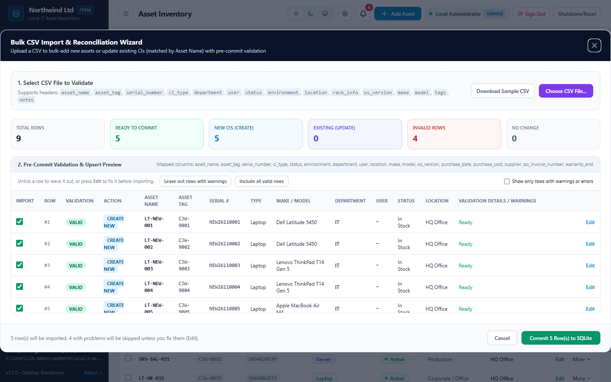
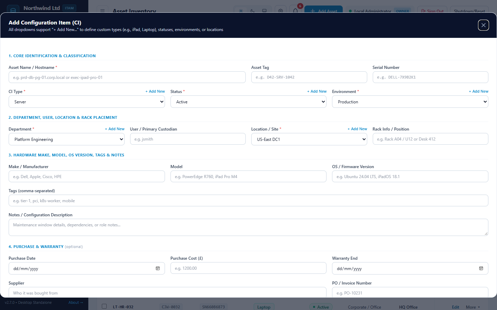
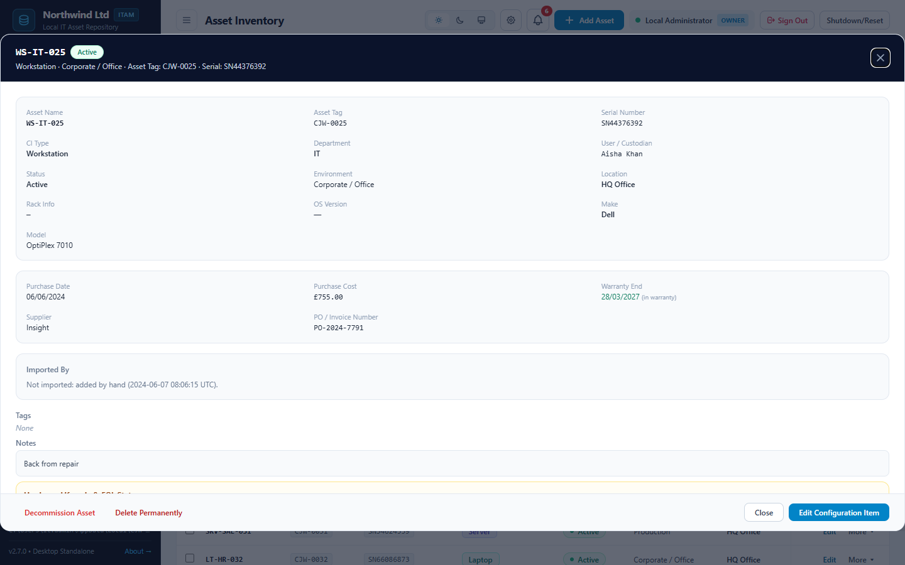
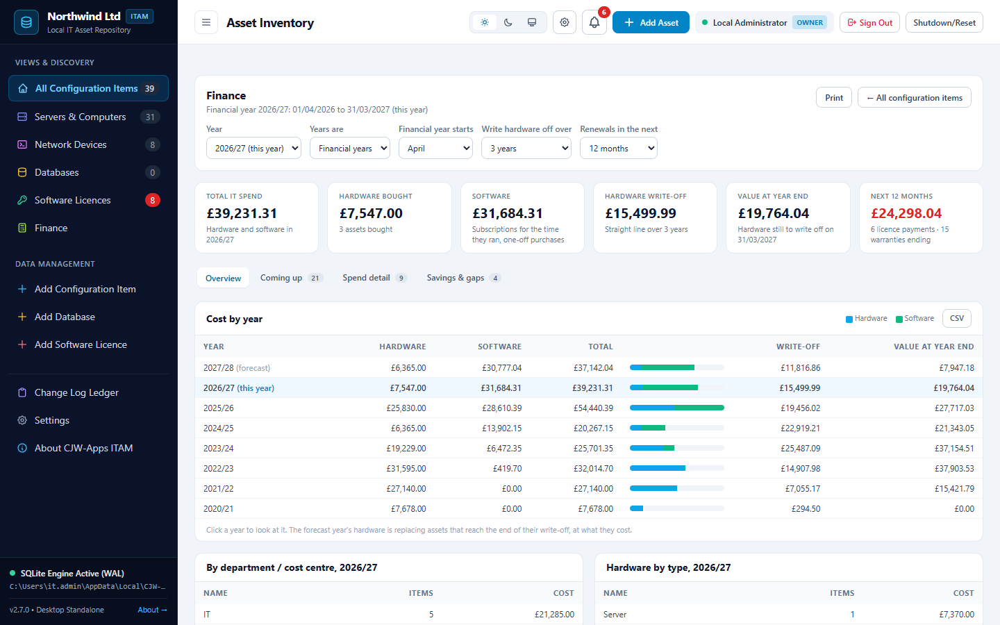
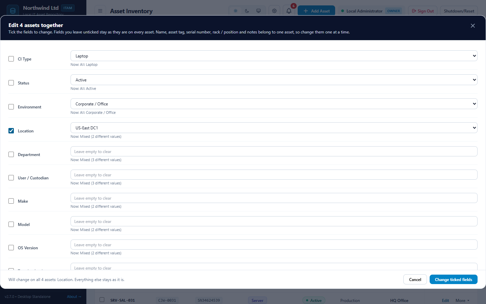

Getting Started
CJW-Apps ITAM · Version 2.9.0
This guide takes you from installing ITAM to a working asset register in about fifteen minutes. It is written for whoever installs ITAM and looks after it. For every setting in detail, see the Installation & Configuration Guide.
In this guide
- What ITAM does
- Before you start
- Install ITAM
- Sign in for the first time
- A tour of the screen
- Your first fifteen minutes
- Where to go next
1. What ITAM does
CJW-Apps ITAM is an IT asset register for small and growing organisations. It keeps one record for every piece of IT you own, and keeps it up to date for you.
| You want to... | ITAM gives you... |
|---|---|
| Know what you have, who has it and where it is | One record per asset: name, tag, serial number, type, user, department, location, status, make, model and OS |
| Know what it cost and when the warranty ends | Purchase date, cost, supplier, PO / invoice number and warranty end, with a warning before a warranty runs out |
| Stop typing it all in | Agentless network scans and CSV import, with a review before anything is saved; Microsoft Intune and Google Workspace imports with ITAM Pro |
| Stay licence-compliant | Software licences with seats bought, the assets each is installed on, and renewal alerts |
| Plan replacements | End-of-life and end-of-support dates for each hardware model |
| Know what IT costs | A Finance view: spend by year, hardware write-off, renewals coming up and unused licence seats |
| See who changed what | A History on every asset: each field from its old value to the new one, who changed it and how |
| Change many assets at once | Edit together: tick assets and set a location, department, user, status and more in one go |
| Share it with colleagues | Viewer, editor and administrator roles, sign-in with Microsoft or Google, and secure access over your network |
Everything is stored on your own PC. There is no account with CJW Apps and nothing is sent to us.
2. Before you start
| You need | Notes |
|---|---|
| A Windows PC | Windows 10 (version 1809 or later), Windows 11, or Windows Server 2019 or later, 64-bit |
| Microsoft Edge or Google Chrome | ITAM opens in its own browser window. Edge is part of Windows |
| About 200 MB of disk space | Plus room for your backups |
| An administrator's Windows account | Only to install. ITAM itself runs as an ordinary user |
| Internet access | Only for Microsoft or Google sign-in, Intune or Google Workspace imports, and lifecycle updates |
If colleagues will use ITAM from their own PCs, install it on a PC that stays switched on, such as an office server or an always-on desktop. They need nothing installed: they use their web browser.
3. Install ITAM
- Extract the zip from CJW Apps to a folder of its own, for example
C:\Apps\ITAM. Do not run ITAM from inside the zip. - Double-click CJW_Apps_ITAM.exe in that folder. ITAM keeps its data in the same folder.
ITAM is free for up to 100 assets, with network scans and CSV imports. Software licences and decommissioned assets are not counted. A licence key switches on Pro (no limit, Microsoft Intune and Google Workspace imports), Education or Education Trust; ask CJW Apps for a free 30-day demo key to try one first (see Licence key). Without a key nothing is ever deleted or locked: only adding new assets pauses at the limit.
To run ITAM on a server that nobody signs in to, see Running ITAM as a Windows service.
What happens when ITAM starts
- ITAM opens in its own window. The address is
http://127.0.0.1:5050, which only this PC can reach. - The ITAM icon appears in the notification area near the clock (it may be under the ^ arrow). Closing the window does not stop ITAM: backups and scheduled scans carry on. Click the icon to open the window again, or right-click it and choose Quit ITAM to stop the program.
- The window uses its own Microsoft Edge profile, apart from your everyday browsing. Your browser's extensions (such as dark-mode add-ons) and "clear cookies when closing" settings do not affect it, so it stays signed in until the automatic sign-out time passes.
- The first time, Windows Defender Firewall may ask whether ITAM may use the network. Choose Private networks. This is only needed for network scans and for colleagues to connect.
4. Sign in for the first time

The first time ITAM opens, it shows Set up ITAM instead of the sign-in boxes. Do this on the PC where ITAM is installed: for safety, ITAM cannot be set up from another computer.
- Enter the name of your organisation, school or trust, and choose what it is: one organisation, one school or a trust of schools. (Several schools need an Education Trust licence key; see Licence key.)
- Choose the password for the
adminaccount. It needs at least 8 characters, with a capital letter, a number and a special character, and no spaces. From then on you sign in asadminwith this password. - ITAM then shows a Master Recovery Key, once only. Write it down and keep it somewhere safe, away from
the PC. It is the only way back in if the
adminpassword is forgotten, and it is needed for a factory reset.
The admin account is the built-in owner of ITAM. Only it can restart, shut down and reset ITAM. Create named
accounts for everyday use (see step 6).
5. A tour of the screen

| Area | What it is |
|---|---|
| Left menu | Views (all assets, servers and computers, network devices, databases, software licences) with counts; Finance; add assets and licences; the change log, Settings and About |
| Top bar | Light, dark or Windows theme; Settings; the alert bell; Add Asset; your name and role; Sign Out |
| Dashboard tiles | Totals for each group. Click a tile to show that group |
| Filters | Search, type, status, environment and location; Columns chooses which details the table shows |
| Asset table | One row per asset. Click a row for its details; Edit and More change it. Tick several rows and press Edit together... to change them in one go |
The alert bell warns you about licences that need renewing, warranties that are ending, and scheduled imports waiting for your review. Each alert can be cleared with its ✕.

6. Your first fifteen minutes
Want to explore first?
Settings → Config CI & Taxonomy → Load Sample Data adds ten example assets, four licences and a network. Remove Sample Data later takes away only the examples you have not changed. Try it with the examples, then remove them and follow the steps below.
Step 1: Set up backups (2 minutes)
Settings → Backups & Storage
- Set Backup Target Directory to a folder on another drive, a network share or a synced folder.
- Set the Automated Backup Schedule to Daily.
- Press Create Full Database Backup once to check it works.

Keep backups in a folder of your own. If ITAM is uninstalled, Windows removes the app's own storage, including backups left in the default folder.
Step 2: Add your company name (1 minute)
Settings → Config CI & Taxonomy: type your company name and choose a small logo. They replace "CJW-Apps" at the top of the screen for everyone.

Step 3: Add your assets (5 minutes)
Choose whichever suits you. You can mix them.
| Way | Best for | Where |
|---|---|---|
| By hand | A few assets | Add Asset in the top bar |
| CSV file | A spreadsheet you already have | Settings → Import & Export → Bulk CI CSV Import |
| Network scan | PCs, servers, printers and network devices on your network | Settings → Network Scans |
| Microsoft Intune (Pro) | Laptops and phones Intune already manages | Settings → Integrations |
| Google Workspace (Pro) | Chromebooks, phones and computers Google already manages | Settings → Integrations |
Every import shows you what it will add or change before anything is saved:
- Untick a row to leave it out, or press Edit to fix a row with a problem; ITAM checks it again.
- Rows with problems are never imported. Leave out rows with warnings and Show only rows with warnings or errors help with long files.
- Rows that match what ITAM already holds are not listed; they are counted under No Change.
- Network scans are kept for you to review: the last 5 of each network.

To add a single asset by hand, press Add Asset:

Only Asset Name is required. Section 4, Purchase & Warranty, is optional, but filling in the warranty end means ITAM warns you 30 days before it runs out.

Step 4: Add your software licences (3 minutes)
Press Add Software Licence in the left menu. Enter the product, seats bought, cost, renewal date and how it is licensed (per device, per user, site licence...). Under Installed on, choose the assets that use it: ITAM then shows whether you are compliant. Click a licence in the list on the dashboard to see all its details.
Many licences at once: Settings → Import & Export → Bulk Licences CSV Import opens the same kind of review as assets.

Step 5: Add your colleagues (2 minutes)
Settings → Users & Auth
- Local accounts: create a user name and temporary password for each person; they choose their own at first sign-in.
- Sign in with Microsoft or Google: people use their existing work account. See the Installation & Configuration Guide.
Give each person a role: Viewer (look and search), Editor (also add, change, import and export) or Administrator (everything, including settings).

Step 6: Look at your costs (1 minute)
Press Finance in the left menu. It adds up what your hardware and software cost each year, writes the hardware off over 1 to 10 years (3 at first), and lists the renewals and warranties coming up. Choose next year to see a forecast of the licence payments, warranties and hardware replacements due in it. Choose whether your years are financial or calendar years and the month your financial year starts; an administrator can press Save as default to keep that for everyone.

The figures come from each asset's Purchase & Warranty details and each licence's cost. To fill them in for many assets at once, tick them in the asset table and press Edit together.... Tick only the fields to change; everything you leave unticked stays as it is on every asset.

7. Where to go next
| To... | Read |
|---|---|
| Let colleagues open ITAM from their PCs | Installation & Configuration: Network access |
| Find devices on your network automatically | Installation & Configuration: Network discovery |
| Check which firewall ports are needed | Installation & Configuration: Network ports and protocols |
| Bring in Intune or Google Workspace devices (Pro) | Microsoft Intune · Google Workspace |
| See an asset's history, or edit several assets together | User Guide: Assets |
| Understand the Finance figures | User Guide: Finance |
| Learn the day-to-day screens | User Guide |
| Fix a problem | Troubleshooting |
Support: cjw-apps@cwink.com · apps.cwink.com/support.html